Production mode
A specific section has been written to explain the concept. See below.
Now that you know handling templates (if not, go to this section), it's time to associate a module with an application. This association (module and application) is necessary to generate the files for your context. If we are more specific, it's the association of a platform with a module that will allow you to generate files for your context.
Actually, you can have a set of platform linked to an application.
Before managing platforms, you have to create it. To do that, click on "By application" menu and "Create a platform" :
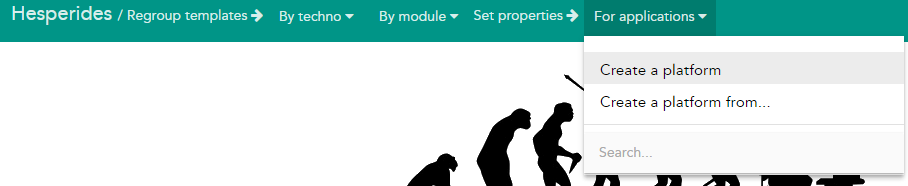
You can now just fulfill the name (1) of the application, the name of the platform (2) and the indicative version of your platform (3) - then "create" button (4):
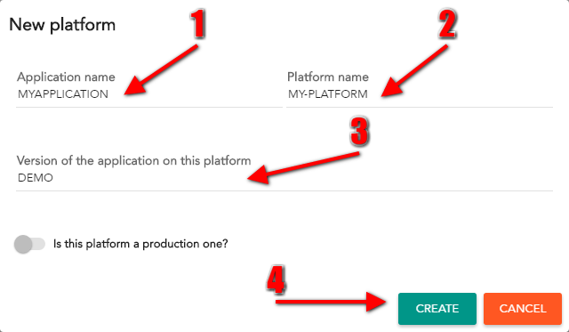
A specific section has been written to explain the concept. See below.
Instead of creating a platform from scratch, you can create a platform from an existing one. To do that, get in "By application" menu and clic on "Create a platform from..." :
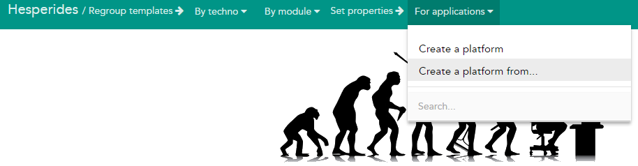
You can now just fulfill the name (1) of the application, the name of the platform (2), the indicative version (3) and use autocomplete field to find which module you want to copy (4) - then "create" button (5):
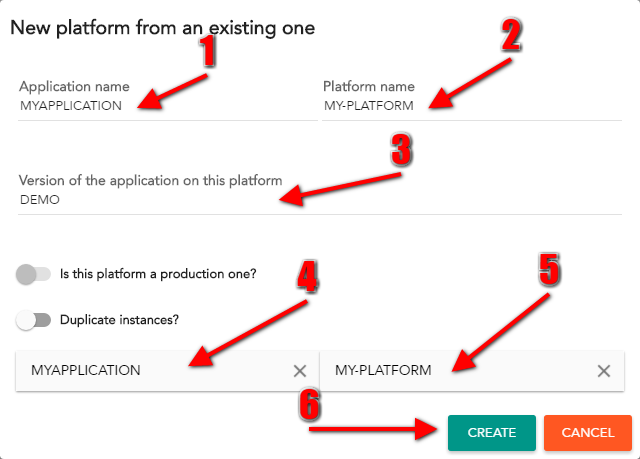
Specific sections for production and instances
Now you have created a platform, you have to create what we call a "logic representation". Three main concepts :
Hesperides offers two presentation mode : tree and block. You can choose your mode thanks to those icons :
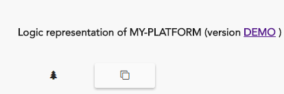
You will find below the several operations availables to manage a platform according to the selected mode :
| Operation | Tree mode | Block mode | After clicking the link |
|---|---|---|---|
| Add first level | 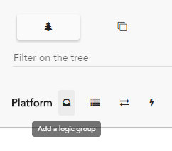 | 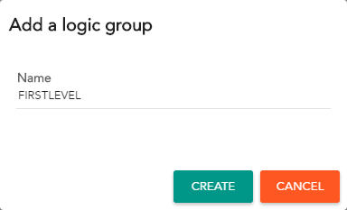 | |
| Add second level level | 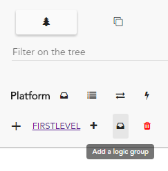 | 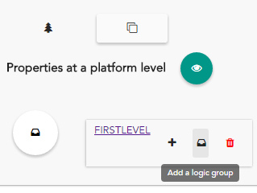 | 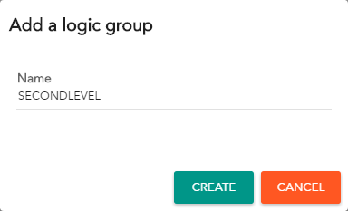 |
| Add module |  |
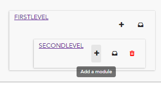 | 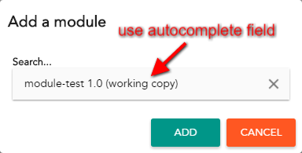 |
| Add instance | 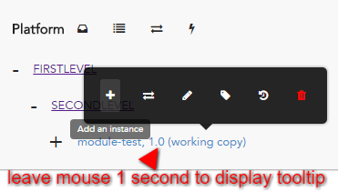 | 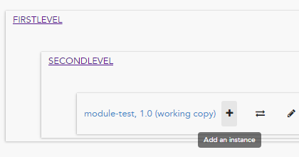 | 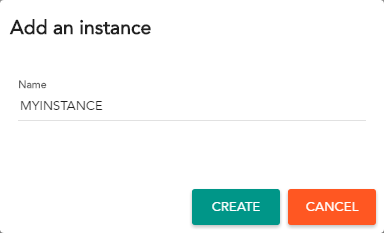 |
You created your first logic representation
| Tree mode | Block mode |
|---|---|
 |
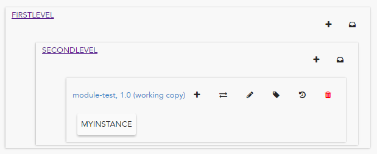 |
You will find below the other operations availables to manage a platform according to the selected mode :
| Operation | Tree mode | Block mode | After clicking the link |
|---|---|---|---|
| Change group name | Click on the group name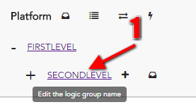 | Click on the group name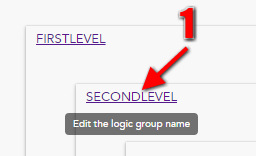 | You can set the new name and press enter :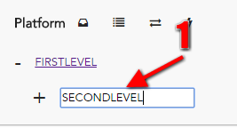 |
| Change instance name | Click on the link containing instance name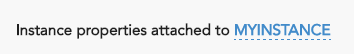 | Click on the link containing instance name | The link becomes an input where you can set the new name and click on tick button :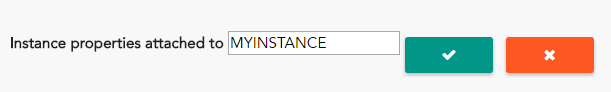 |
| Upgrade module version | 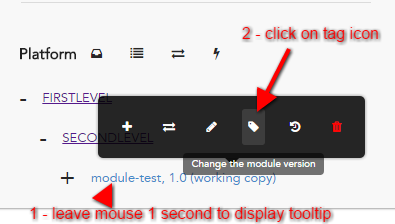 | 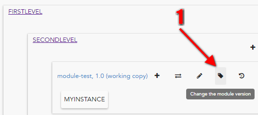 | Use autocomplete to find the version to use :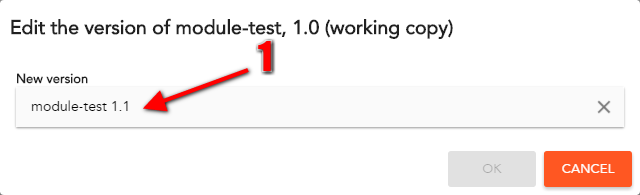 |
| Display module templates | 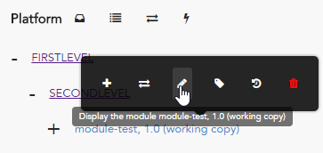 | 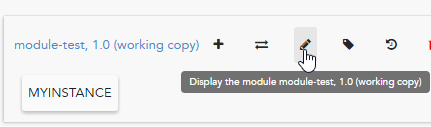 | You can directly edit your module :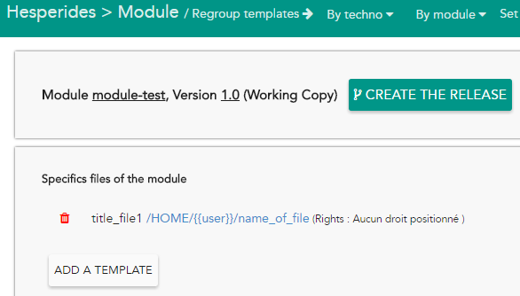 |
Yes, this is a weird section name, but we chose it because this popup job is to resolve conflicts :) If you haven't heard of local changes please read this section first (local changes explained)
From a platform, you can see this button, hit it to enter in the United Nation popup. The value in parentheses represent the global amount of local changes within the current platform
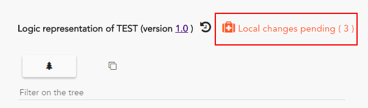This is the landing page of United Nation popup
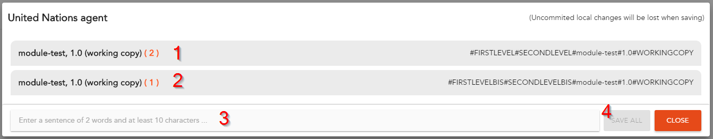Clicking on the part represented by 1 will display this part
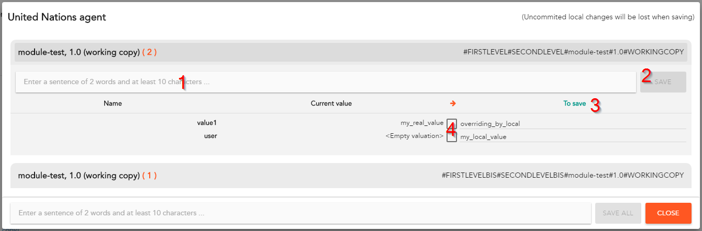In part (3) you can also edit on the input directly if you see fit.
If you hit the save button in this configuration, you will apply the value present in the "To save" column, so "overriding_by_local" and "my_local_value" will be save
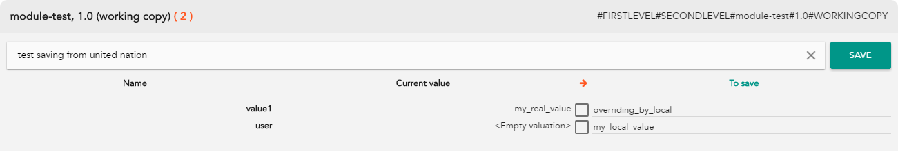But If you hit the save button in this configuration with a checkbox checked, you will also apply the value present in the "To save" column, so "my_real_value" and "my_local_value" will be save
Hesperides saves every event that modify the state of your platforms and your modules. Mixed with the information about logins, you can retrieve information about your platform : who did this update ? who added the template to the module ? etc ...
Whether with tree or block mode, you can display platform events here :
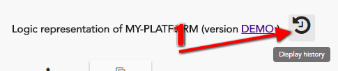In the displayed modal, you will be able to know :
For example :
You can display platform events here :
For example :
You can go there if you want tecnical informations about events in Hesperides
The production role is a permission granted to some users to edit and have access to unobfuscated password on some production platforms.
Platforms can be tagged as production in 3 places :
| Where ? | How ? | Result in logic representation |
|---|---|---|
| Create platform | 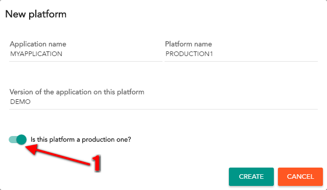 | 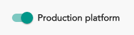 |
| Create platform from |  |
|
| Logic representation | 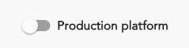 |
When a user without production role access a production platform:
@password annotations: ******** will be displayed instead$LDAP_PROD_GROUP_DNACLs can be edited easily through the form at the top of every application page, where users already having the production role can delegate those permissions to additional directory groups. A user ACLs are summarized on the profile page.